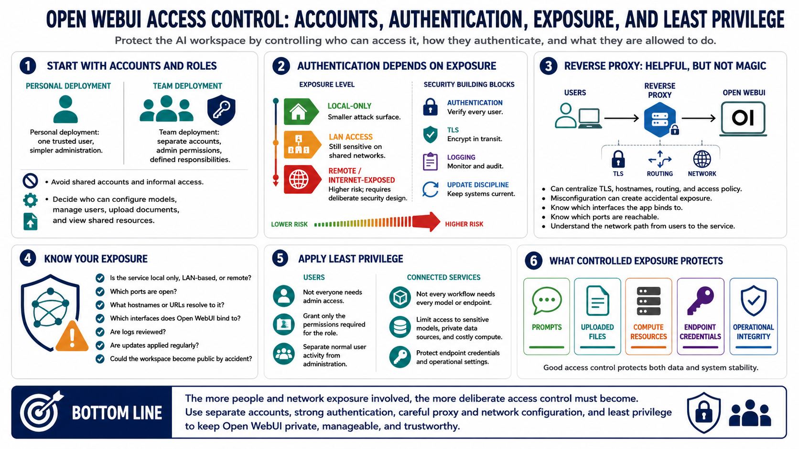

Users, Access Control, and Exposure Management
Connecting to LMS... Progress: in progress

Narration
Access control starts with account creation and administrative roles. A personal deployment may have one trusted user. A team deployment may need separate accounts, administrative permissions, and clear expectations for who can configure models, manage users, upload documents, or view shared resources. The more people who use the system, the more important it is to avoid shared accounts and informal access.
Authentication considerations depend on how the service is exposed. A local-only deployment has a smaller attack surface than a service reachable across a LAN or the internet. LAN access can still be sensitive in shared networks. Remote access introduces more risk and should be deliberately designed with authentication, TLS at a high level, reverse proxy configuration, logging, and update discipline.
Reverse proxies can help centralize TLS, hostnames, routing, and access policy, but they can also create accidental exposure if misconfigured. Operators should know which interfaces Open WebUI binds to, which ports are reachable, and what network paths exist from users to the service. A private AI workspace should not become public infrastructure by accident.
Least privilege applies to both users and connected services. Not every user needs administrative access. Not every workflow needs every model or endpoint. Applications and users should receive only the access needed for their role. Controlled exposure protects prompts, uploaded files, compute resources, endpoint credentials, and the operational integrity of the deployment.